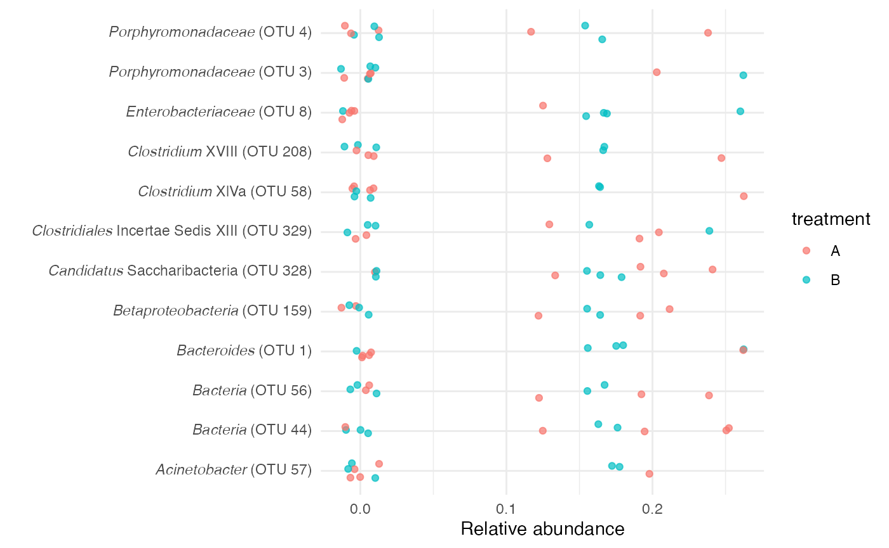

Parsing mothur output files
Taxonomy files
mothur formats taxonomy files as tab-separated values (tsv). You can use read_tax() to parse the taxonomy data and create separate columns for each taxonomic level.
tax_filepath <- system.file("extdata", "test.taxonomy", package = "schtools")
tax_dat <- read_tax(tax_filepath)
head(tax_dat)
#> # A tibble: 6 × 10
#> otu otu_label tax_otu_l…¹ label…² kingdom phylum class order family genus
#> <chr> <chr> <chr> <chr> <chr> <chr> <chr> <chr> <chr> <chr>
#> 1 Otu0001 OTU 1 Bacteroide… <i>Bac… Bacter… Bacte… Bact… Bact… Bacte… Bact…
#> 2 Otu0003 OTU 3 Porphyromo… <i>Por… Bacter… Bacte… Bact… Bact… Porph… Porp…
#> 3 Otu0004 OTU 4 Porphyromo… <i>Por… Bacter… Bacte… Bact… Bact… Porph… Porp…
#> 4 Otu00008 OTU 8 Enterobact… <i>Ent… Bacter… Prote… Gamm… Ente… Enter… Ente…
#> 5 Otu0044 OTU 44 Bacteria (… <i>Bac… Bacter… Bacte… Bact… Bact… Bacte… Bact…
#> 6 Otu0056 OTU 56 Bacteria (… <i>Bac… Bacter… Bacte… Bact… Bact… Bacte… Bact…
#> # … with abbreviated variable names ¹tax_otu_label, ²label_htmlThe column label_html provides html that correctly italicizes the genus name without italicizing the OTU label. This can be used with ggtext::element_markdown() to make nice plots:
library(dplyr)
#>
#> Attaching package: 'dplyr'
#> The following objects are masked from 'package:stats':
#>
#> filter, lag
#> The following objects are masked from 'package:base':
#>
#> intersect, setdiff, setequal, union
library(ggplot2)
library(ggtext)
library(tidyr)
set.seed(20220427)
pick_random_bool <- function(n = nrow(tax_dat)) {
sample(c(TRUE, FALSE), n, replace = TRUE)
}
tax_dat %>%
select(label_html) %>%
mutate(sample1 = pick_random_bool(), sample2 = pick_random_bool(), sample3 = pick_random_bool()) %>%
pivot_longer(starts_with("sample"), names_to = "sample", values_to = "presence") %>%
ggplot(aes(x = sample, y = label_html)) + geom_tile(colour = "whitesmoke", fill = "white",
size = 0.5) + geom_point(aes(color = presence), size = 4) + scale_fill_manual(values = c(`TRUE` = "#08519C",
`FALSE` = "#F0F0F0")) + scale_x_discrete(position = "top") + theme_minimal() +
theme(axis.text.y = element_markdown(), axis.title.y = element_blank(), axis.title.x = element_blank())
Pooling OTU counts at different taxonomic levels
A common task is to repeat OTU-level analyses at different taxonomic levels to determine which resolution is optimal for answering your questions. You’ll need a shared file, generated from clustering sequences into OTUs with mothur, and a corresponding taxonomy file. Take a look at the mothur documentation for info on generating these files and performing microbiome analyses.
tax_dat <- read_tax(system.file("extdata", "test.taxonomy", package = "schtools"))
shared_dat <- readr::read_tsv(system.file("extdata", "test.shared", package = "schtools"))
#> Rows: 10 Columns: 15
#> ── Column specification ────────────────────────────────────────────────────────
#> Delimiter: "\t"
#> chr (1): Group
#> dbl (14): label, numOtus, Otu0001, Otu0003, Otu0004, Otu00008, Otu0044, Otu0...
#>
#> ℹ Use `spec()` to retrieve the full column specification for this data.
#> ℹ Specify the column types or set `show_col_types = FALSE` to quiet this message.
pool_taxon_counts(shared_dat, tax_dat, genus)
#> $shared
#> # A tibble: 10 × 13
#> label Group numOtus Otu01 Otu02 Otu03 Otu04 Otu05 Otu06 Otu07 Otu08 Otu09
#> <chr> <chr> <dbl> <dbl> <dbl> <dbl> <dbl> <dbl> <dbl> <dbl> <dbl> <dbl>
#> 1 genus p1 10 0 0 0 2 0 1 0 1 0
#> 2 genus p10 10 1 0 1 0 1 0 1 1 1
#> 3 genus p2 10 1 1 0 1 0 1 0 0 1
#> 4 genus p3 10 0 1 0 1 0 0 1 0 1
#> 5 genus p4 10 1 1 1 0 0 0 0 0 0
#> 6 genus p5 10 1 1 0 1 0 0 0 0 1
#> 7 genus p6 10 1 0 1 1 1 1 0 0 1
#> 8 genus p7 10 0 0 0 1 1 0 1 0 1
#> 9 genus p8 10 0 1 1 2 0 0 1 1 0
#> 10 genus p9 10 0 1 1 2 0 0 1 1 1
#> # … with 1 more variable: Otu10 <dbl>
#>
#> $tax
#> # A tibble: 10 × 3
#> otu size genus
#> <chr> <dbl> <chr>
#> 1 Otu01 5 Bacteroides
#> 2 Otu02 6 Porphyromonadaceae unclassified
#> 3 Otu03 5 Enterobacteriaceae unclassified
#> 4 Otu04 11 Bacteria unclassified
#> 5 Otu05 3 Acinetobacter
#> 6 Otu06 3 Clostridium XlVa
#> 7 Otu07 5 Betaproteobacteria unclassified
#> 8 Otu08 4 Clostridium XVIII
#> 9 Otu09 7 Candidatus Saccharibacteria unclassified
#> 10 Otu10 5 Clostridiales Incertae Sedis XIII unclassifiedIn this example, pool_taxon_counts() pools the OTU counts in the shared file at the genus level and returns new shared and taxonomy data frames. You can do this for any taxonomic level in your taxonomy data frame.
pool_taxon_counts(shared_dat, tax_dat, phylum)
#> $shared
#> # A tibble: 10 × 8
#> label Group numOtus Otu1 Otu2 Otu3 Otu4 Otu5
#> <chr> <chr> <dbl> <dbl> <dbl> <dbl> <dbl> <dbl>
#> 1 phylum p1 5 0 0 2 2 0
#> 2 phylum p10 5 1 3 0 1 1
#> 3 phylum p2 5 2 0 1 2 1
#> 4 phylum p3 5 1 1 1 1 1
#> 5 phylum p4 5 2 1 0 1 0
#> 6 phylum p5 5 2 0 1 0 1
#> 7 phylum p6 5 1 2 1 1 1
#> 8 phylum p7 5 0 2 1 1 1
#> 9 phylum p8 5 1 2 2 1 0
#> 10 phylum p9 5 1 2 2 2 1
#>
#> $tax
#> # A tibble: 5 × 3
#> otu size phylum
#> <chr> <dbl> <chr>
#> 1 Otu1 11 Bacteroidetes
#> 2 Otu2 13 Proteobacteria
#> 3 Otu3 11 Bacteria unclassified
#> 4 Otu4 12 Firmicutes
#> 5 Otu5 7 Candidatus SaccharibacteriaDistance files
If you have a distance file saved as a phylip-formatted lower triangle matrix from mothur’s dist.seqs command, you can read it into R with read_dist():
dist_filepath <- system.file("extdata", "sample.final.thetayc.0.03.lt.ave.dist",
package = "schtools")
dist_tbl <- read_dist(dist_filepath)
head(dist_tbl)
#> # A tibble: 6 × 3
#> rows columns distances
#> <chr> <chr> <dbl>
#> 1 104_1_D1 104_1_D0 0.893
#> 2 104_1_D10 104_1_D0 0.254
#> 3 104_1_D10 104_1_D1 0.922
#> 4 104_1_D2 104_1_D0 0.874
#> 5 104_1_D2 104_1_D1 0.109
#> 6 104_1_D2 104_1_D10 0.904R Markdown helpers for scientific writing
When writing scientific papers with R Markdown, we often find ourselves using the same knitr chunk options and miscellaneous helper functions. To use our favorite options like eval=TRUE, echo=FALSE, and others, run set_knitr_opts() in the first chunk of your R Markdown document:
This also sets the inline hook to our custom inline_hook() function, which automatically formats numbers in a human-readable way and inserts an Oxford comma into lists when needed.
Who doesn’t love an Oxford comma?
When writing with R Markdown, you may wish to insert a list or vector inline and correctly format it with an Oxford comma. inline_hook() uses paste_oxford_list() to help you do just that!
animals <- c("cats", "dogs", "fish")Insert the string as inline code with `r `:
`r animals`are the most common pets.
Rendered output:
cats, dogs, and fish are the most common pets.
Human-readable numbers
inline_hook() uses format_numbers() under the hood to automatically format numbers to a human-readable format, rather than display in scientific notation.
The numbers
`r c(1e-04, 1e-05, 1e-06)`are very precise, while`r c(1e04, 1e05, 1e06)`are very large.
Rendered output:
The numbers 0.0001, 0.00001, and 0.000001 are very precise. while 10,000, 100,000, and 1,000,000 are very large.